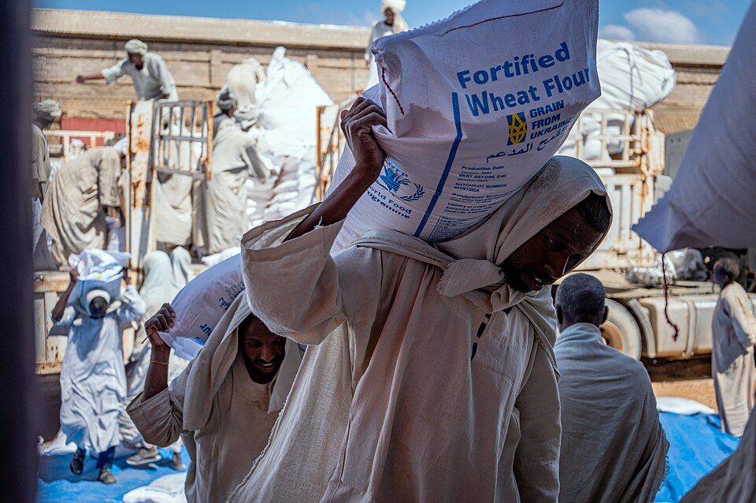

5면유엔세계식량계획(WFP)
목적: 배고픔 없는 세상(제로 헝거)
주요 활동
- 분쟁 지역에 식량 지원
- 기후 재난 조기 경보
- 일하면 식량·현금 지원
기여
식량으로 평화의 길을 만든 공로로 2020년 노벨 평화상

5
4면해결 방안과 기대 효과
개인음식 남기지 않기, 기부하기
사회푸드뱅크, 사회 안전망 만들기
국제긴급 식량 지원, 재난 조기 경보
기대 효과
결핍에서 벗어나 안전하게 사는 인간 안보가 실현된다.
배고픔 같은 구조적 폭력이 사라진 적극적 평화에 가까워진다.
4
3면기아가 미치는 영향
개인영양이 부족해 건강을 잃고, 학교 대신 일하러 가서 배우지 못한다.
사회일할 사람이 줄어 지역 경제가 어려워진다.
국제배고픔이 갈등과 난민을 낳고, 갈등이 다시 배고픔을 키우는 악순환이 생긴다.
기아는 모두의 문제!
3
2면세계의 문제: 기아(배고픔)
식량은 모두가 먹고도 남지만, 6억 명이 넘는 사람이 굶주린다.
원인
분쟁 · 기후 위기 · 재난 · 불평등 · 식량 소실
사례
배고픈 사람의 60%가 분쟁 지역에 산다. (예멘, 남수단 등)

2
6면나의 실천
- 공정무역 제품 사기
- 급식 남기지 않기
- 필요한 만큼만 사기

느낀 점
공정무역 제품을 사면 농민이 제값을 받아 가난과 배고픔을 줄일 수 있다. 작은 소비도 세계를 바꿀 수 있다.
6
부록참고 자료
- 『오늘부터 나는 세계 시민입니다』
- WFP 한국사무소
「배고픔을 끝내기 위해」
ko.wfp.org/ending-hunger
사진 출처
- 2면: Oxfam East Africa
- 5면: WFP
- 6면: 직접 촬영
SDGs 2번
기아 종식 (제로 헝거)
7
음식을 남기지 않는 것,
세계 시민의 첫걸음
세계 시민의 첫걸음
2학년 도덕 수행평가
세계 시민 프로젝트
2학년 ○반 ○번 ○○○
세계 시민 미니북
모두의 밥상,
하나의 지구
하나의 지구
세계 시민이란?
지구 공동체의 한 사람으로서
세계 문제 해결에 함께하는 사람